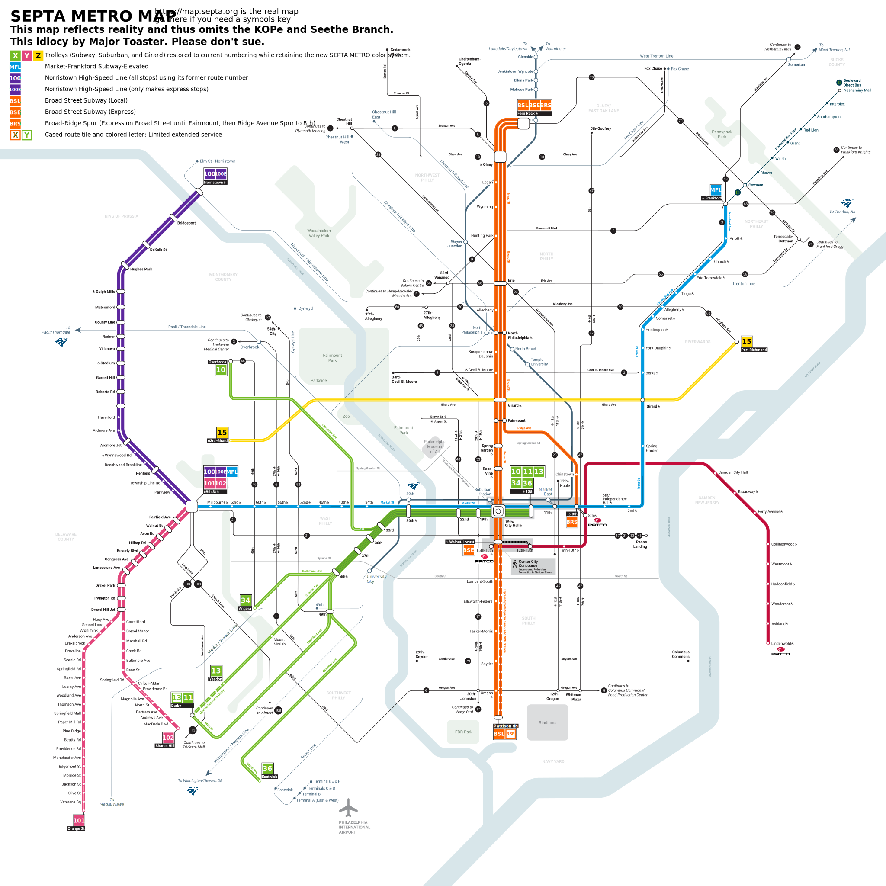
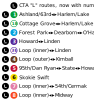
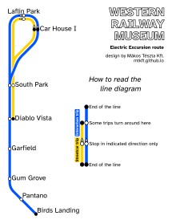

| Description | Vector image | Alternate download |
|---|---|---|
| (printable!) SEPTA Metro map with extant numbers and Wawa representation You may wish to "open image in new tab" or just go straight to the pdf. |  | septametro-map-printable.pdf: 1.42M |
| CTA "L" color-named lines reimagined with numbers* |  | the_el.png: 2194x1909 |
| [HU] CTA "L" színszerint elnevezett vonalak, viszonylatszámokkal újraképzelve | az_el.png: 2406x1909 | |
| Flat-design timetable for the Western Railway Museum's Showcase Weekend 2023** | wrmshowcase.png: 3969x5613 | |
| Route diagram for the Western Railway Museum's streetcar and interurban excursions, echoing Budapest's tram or trolleybus network diagrams |  | wrmmapwide.png: 816x1056 |
* The numbering order mostly catches the chronology of infrastructure that the current routings run on (South Side, then Lake/Metropolitan system, then North Side, then Midway branch).
The Swift, Cermak, and Midway are semi-mnemonic via their assigned numeral (SwIXft, SEVENrmak but take liberties with pronunciation of Cermak, Midw8); the Swift being before the Cermak branch also lets me group it with the other North Side stuff.
** Design features by me include the "chips" for color-coding streetcar and interurban excursions (which at the museum are distinct in the extent of their route on the historic electric trackage south of the WRM grounds) and the stroked-bold-type wordmark. Both make use of my favorite typeface, Atkinson Hyperlegible, which is great both for low-vision and for that general-purpose industrial press or typewriter look.
{kind=link}
{kind=link}
{kind=link}
{kind=link}